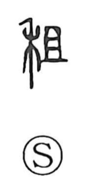

租

Uncategorized
Kun: | On: so
rent ・ tax ・ tribute
Explanation
Shirakawa explains 租 as a phono-semantic character. The phonetic is 且 (so), whose ancient form depicts a sacrificial chopping board on which offerings were set out for ancestral rites. The related graph 俎 shows that board with sliced meat; in 租 the meat is replaced by 禾, the grain element, yielding the image of cereals placed on the offering board. From goods collected in kind for worship and festivals, the meaning developed into tribute and eventually the state’s levies—taxes and land rent.